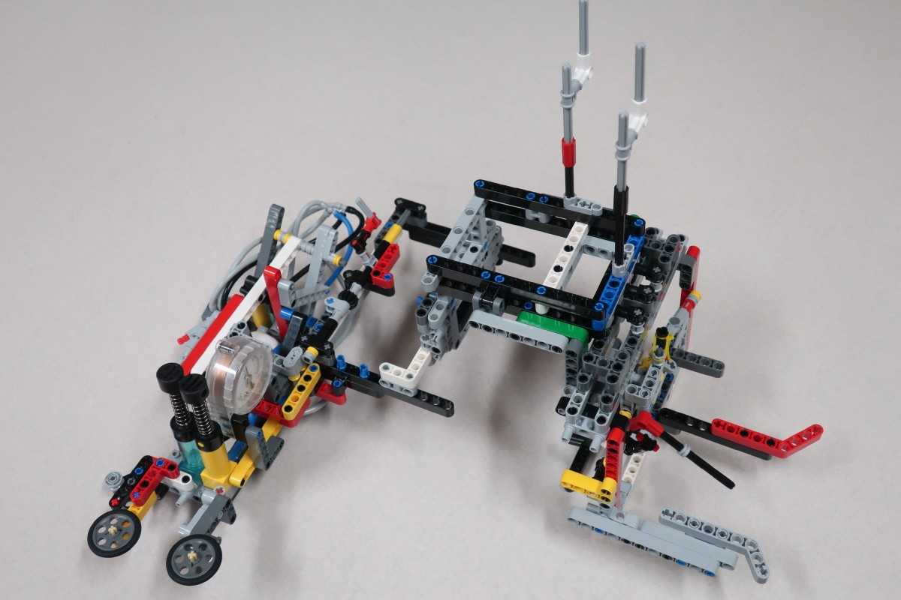
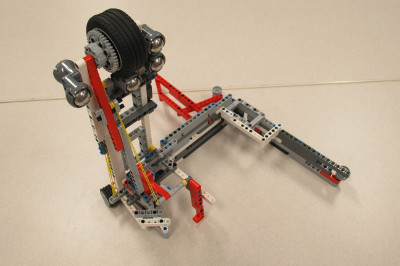

When designing our base robot, we establish criteria at the outset, such as desired footprint, height, balance, drive train, sensors to be used, user interface, etc. to arrive at a working prototype. We also strive to design and build a base robot which is robust and which features a frame around the chassis to provide structural rigidity as well as means to square up against walls and mission models. We design attachments keeping in mind that these attachments need to be easy to install and remove, robust, and both passive and multi-purpose whenever possible. From testing the prototype base robot and the attachments, we make revisions to our work in order to combine and speed up missions and increase repeatability to achieve maximum efficiency. By the end of the season, our attachments will often be in their fifth or sixth iteration.
When first designing our robot we wanted to make sure that all the light/color sensors behaved similarly. Color sensors each return small differences in readings because of variations in manufacturing. For example, if you were to place two different color sensors on the same black line, each would return different values for light intensity. Sometimes the difference may be significant. To make sure that all our light sensors had about the same reading we completely shielded ten color sensors to eliminate the variable of ambient light and recorded the reading for each of the color sensors on black, white, and green. We then found the three color sensors which have the closest reading to each other and used those three color sensors on the robot.
We have found the the green EV3 move blocks (Move Tank and Move Steering) are unreliable. Although they have a built in PID feature, they still do not move the robot in a straight line. To test this, we set a designated starting spot for the robot and then we ran it until it hit the wall on the other side of the table. We repeated this dozens of times and found that each time it would end up in a different spot on the other side of the table. Each time it would be up to one inch away from the previous run. Then, we made our own error-corrected move block (which you can read about in the programming section of this website). We conducted the same experiment using our block and found that there was much less error and the robot would consistently end up in the same position on the table.
Our light sensors were dependent on the distance they were away from the mat. We found out that our light sensors were too low to the mat and were not picking up proper light readings. We used the EV3 experiment which can track the different movements on the motors and sensors. We tracked the readings to see if they would change properly from white to black; 100 to 0. They did not reach those values so we realized it was too far from the mat.
Our base robot is very robust and compact with a frame for strength. We also use four light sensors and for maximum flexibility, with shielding from ambient light. The robot’s main drive wheels are medium in diameter and small in thickness to allow us to balance accuracy and speed together. The robot uses small wheels without rubber on them as sliders, to be steering neutral. Our modular design and attachment bay allows the robot driver to install and remove attachments quickly and accurately, while our brain’s positioning allows for easy swapping of batteries.
| Name of Attachment | Description | Picture |
|---|---|---|
| Core Carts | This attachment is a large frame with guide wheels to move along the west wall. It has a long horizontally-moving arm that uses string and a pulley system to move which connects to the gears on the robot when the frame is placed over the robot. As the robot moves along the west wall towards the Space Travel mission using its guide wheels, the arm extends eastward to trigger an elastic mechanism to collect all core samples. The arm then retracts. When the robot reaches the Space Travel mission, it uses a wedge to passively lift the end of the ramp resulting in the Vehicle Payload rolling down the ramp. While doing this, an arm on the end of the attachment pushes the Solar Panel Array away from our competition table. The robot then drives into the ramp releasing the other two payloads and allowing them to roll down the ramp. The robot then travels back to base. |  |
| Tube Velocity | This attachment is a small frame with guide wheels that goes around the robot with a seperate sliding portion. The robot moves eastward along the south wall using its guide wheels. Once the sliding portion of the attachment reaches the Space Station Modules Mission Model, angled beams on it act as a funnel and force it to slide outwards. As the robot continues forward, the Tube Module is inserted into the east side of the mission model and an elastic mechanism is triggered to remove the Dock Module, which is dropped into a basket on the attachment. At the same time, the robot senses the black line just before the Escape Velocity mission model and activates an elastic powered arm to complete the Escape Velocity mission. Once the robot has travelled far enough, a system of gears used to move the arm used to move the Observatory arm pushes the arm far enough that it drops, falling over the Escape Velocity mission model. As the robot keeps moving, the arm pushes the Observatory's arm into the orange target area. The robot moves back to base, leaving the arm for the Observatory behind and taking the Dock Module back to base. |  |
| Satel-duction | This mission does not use any attachment. The robot travels along the south side of the mat until it reaches the line just west of the Escape Velocity mission. The robot then travels to the line south of Food Production, it utilizes PID line following until a different light sensor sees the parallel black line just south of Food Production. The robot then moves the push bar until in a scoring position. The robot then navigates to the satellite scoring area, resulting in the two satellites on the back robot, to be in scoring position |